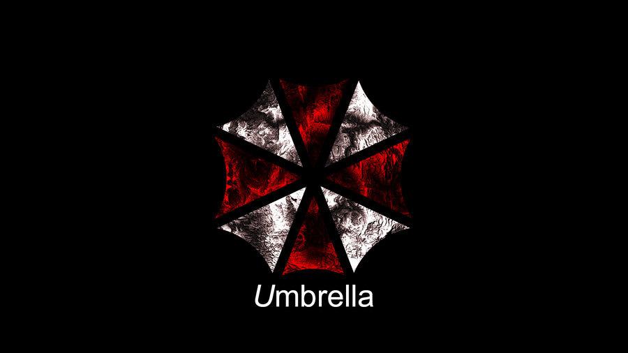
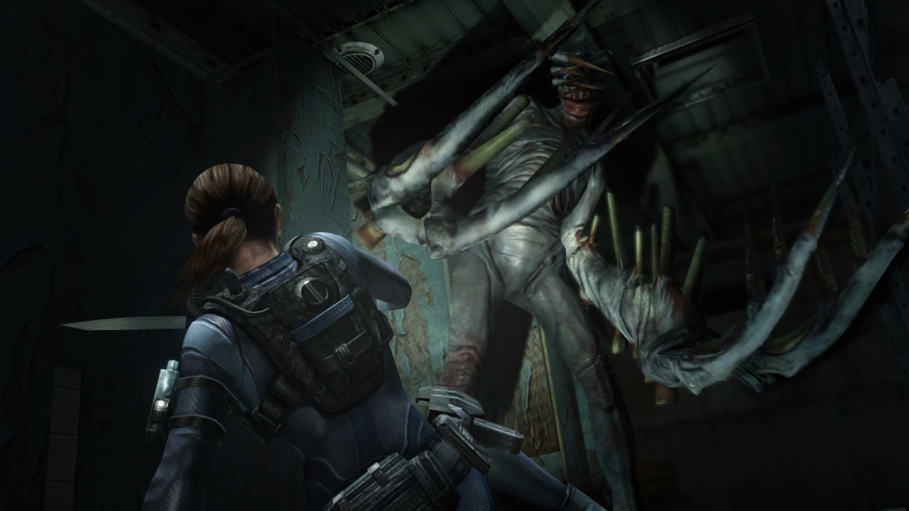
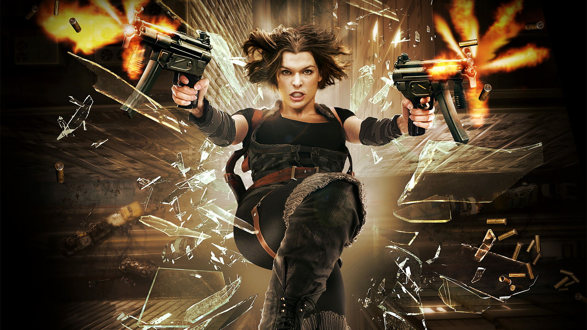
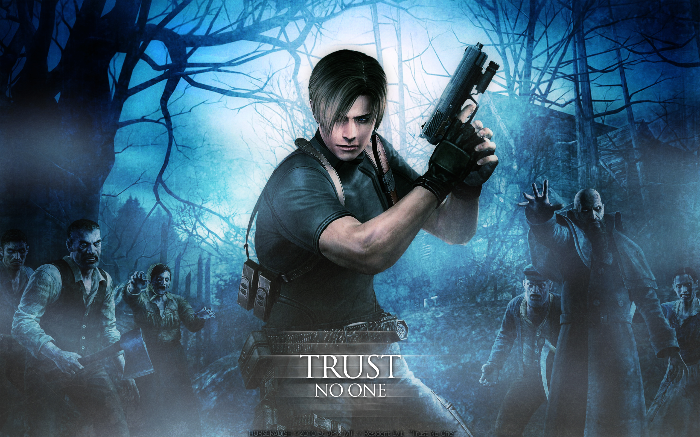

Resident Evil
Resident Evil is an action, adventure, horror fiction video game based media franchise created by Shinji Mikami and owned by the video game company Capcom. The franchise focuses around a series of survival horror video games, but has since branched out into comic books, novels and novelizations, sound dramas, a non-canonical series of live-action films and animated sequels to the games, and a variety of associated merchandise, such as action figures. The overarching plot of the series focuses on multiple characters and their roles in recurring outbreaks of zombies and other monsters, initially due to the release of the T-virus, a biological weapon created by the fictional Umbrella Corporation. The eponymous first game in the series was released in 1996 as a survival horror video game, but the franchise has since grown to encompass other video game genres. The series is a mix of action and horror film-inspired plotlines, exploration and puzzle solving, but from Resident Evil 4 onwards, the main series took a more third-person shooter approach with fewer puzzles and greater emphasis on gunplay and weapons upgrading. As of 2015, the video game series has sold 61 million units worldwide. It has become Capcom's biggest ever franchise in terms of sales and marked the start of the "survival horror" genre, which was already influenced by earlier efforts such as Sweet Home (also by Capcom) and the Alone in the Dark series.
|  | |||
|  |  |  |  |
The survival horror video game Resident Evil made its debut on the PlayStation in 1996, and was later ported to the Sega Saturn. It was a critical and commercial success, leading to the production of two sequels, Resident Evil 2 in 1998 and Resident Evil 3: Nemesis in 1999, both for the PlayStation. A port of Resident Evil 2 was released for the Nintendo 64. In addition, ports of all three were released for Windows. The fourth game in the series, Resident Evil Code: Veronica, was developed for the Sega Dreamcast and released in 2000, followed by ports of 2 and 3. Resident Evil Code: Veronica was later re-released for Dreamcast in Japan in an updated form as Code: Veronica Complete, which included slight changes, many of which revolved around story cutscenes. This updated version was later ported to the PlayStation 2 and GameCube under the title Code: Veronica X. Despite earlier announcements that the next game in the series would be released for the PlayStation 2, which resulted in the creation of an unrelated game titled Devil May Cry, series' creator and producer Shinji Mikami decided to make the series exclusively for the GameCube. The next three games in the series—a remake of the original Resident Evil and the prequel Resident Evil Zero, both released in 2002, as well as Resident Evil 4—were all released initially as GameCube exclusives. Resident Evil 4 was later released for Windows, PlayStation 2 and Wii. In addition, the GameCube received ports of the previous Resident Evil sequels. Despite this exclusivity agreement between Capcom and Nintendo, Capcom released several Resident Evil titles for the PlayStation 2 that were not considered direct sequels.
A trilogy of GunCon-compatible light gun games known as the Gun Survivor series featured first person game play. The first, Resident Evil Survivor, was released in 2000 for the PlayStation and PC, but received mediocre reviews. The subsequent games, Resident Evil Survivor 2 Code: Veronica and Resident Evil: Dead Aim, fared somewhat better. Dead Aim is actually the fourth Gun Survivor game in Japan, with Gun Survivor 3 being the Dino Crisis spin-off Dino Stalker. In a similar vein, the Chronicles series features first person game play, albeit on an on-rails path. Resident Evil: The Umbrella Chronicles was released in 2007 for the Wii, with a follow up, Resident Evil: The Darkside Chronicles released in 2009. Resident Evil Outbreak is an online game for the PlayStation 2, released in 2003, depicting a series of episodic storylines in Raccoon City set during the same time period as Resident Evil 2 and 3. It was the first in the series and the first survival horror title to feature cooperative gameplay and online multiplayer support. It was followed by a sequel, Resident Evil Outbreak File #2. Raccoon City is a metropolis located in the Arklay Mountains of North America that succumbed to the deadly T-virus outbreak and was consequently destroyed via a nuclear missile attack issued by the United States government. The town served a critical junction for the series' progression as one of the main catalysts to Umbrella's downfall as well as the entry point for some of the series' most notable characters.
Resident Evil Gaiden is an action-adventure game for the Game Boy Color featuring an RPG-style combat system. There have also been several downloadable mobile games based on the Resident Evil series in Japan. Some of these mobile games have been released in North America and Europe through T-Mobile. At the Sony press conference during the E3 2009, it was announced that Resident Evil Portable would be released for the PlayStation Portable, described as an all-new title being developed with "the PSP Go in mind" and "totally different for a Resident Evil game". However, as of 2012, no further announcements have been made, and the game is considered to have been cancelled. In March 2011, Capcom revealed the third-person shooter Resident Evil: Operation Raccoon City, which was developed by Slant Six Games for the PlayStation 3, Xbox 360 and Microsoft Windows and released in March 2012. A survival horror game for the Nintendo 3DS, Resident Evil: Revelations, was released in February 2012. In October of the same year, the next numbered entry in the main series, Resident Evil 6, was released to mixed reviews, but enthusiastic pre-order sales.